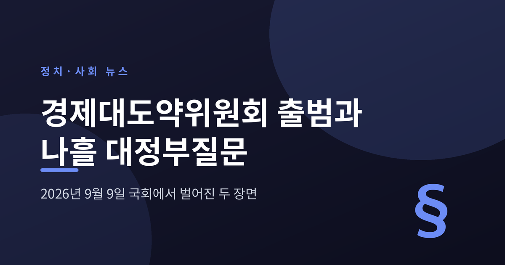
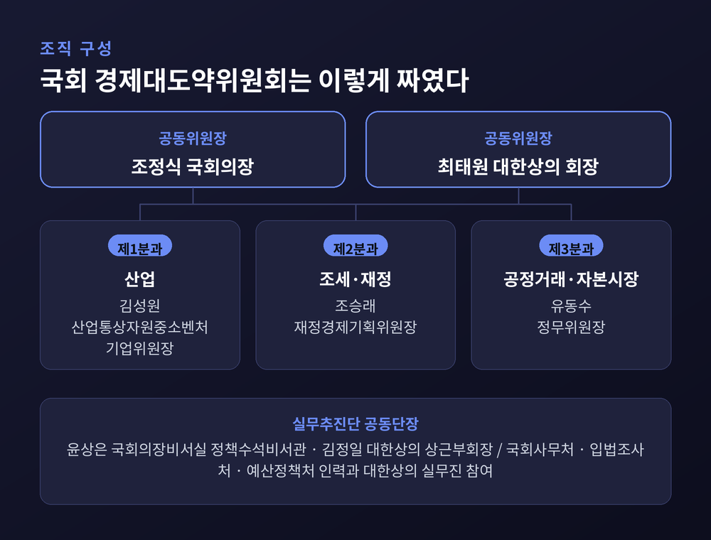
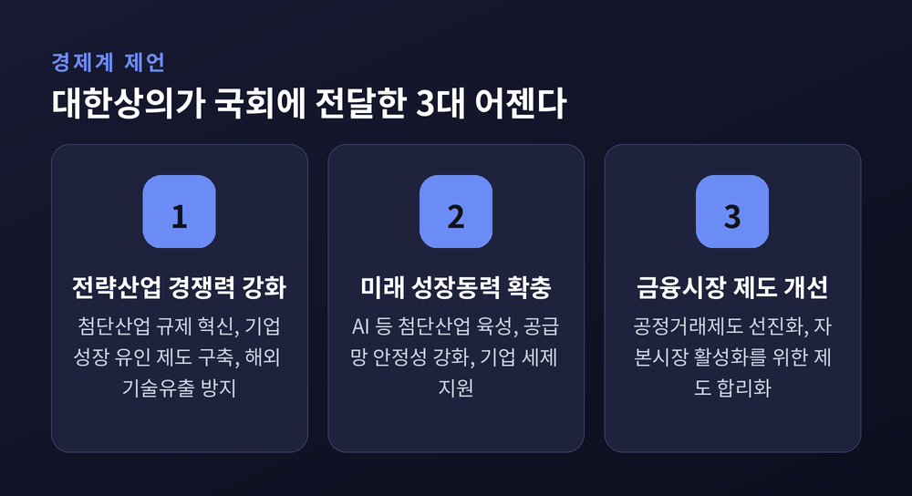
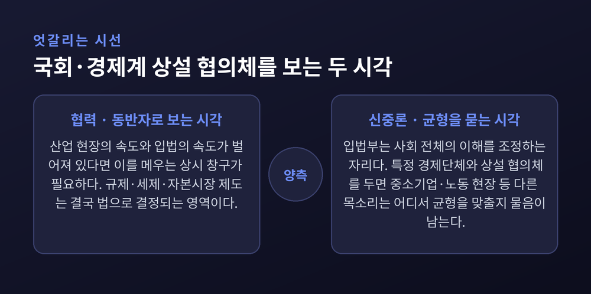
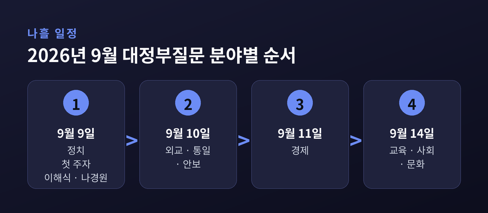
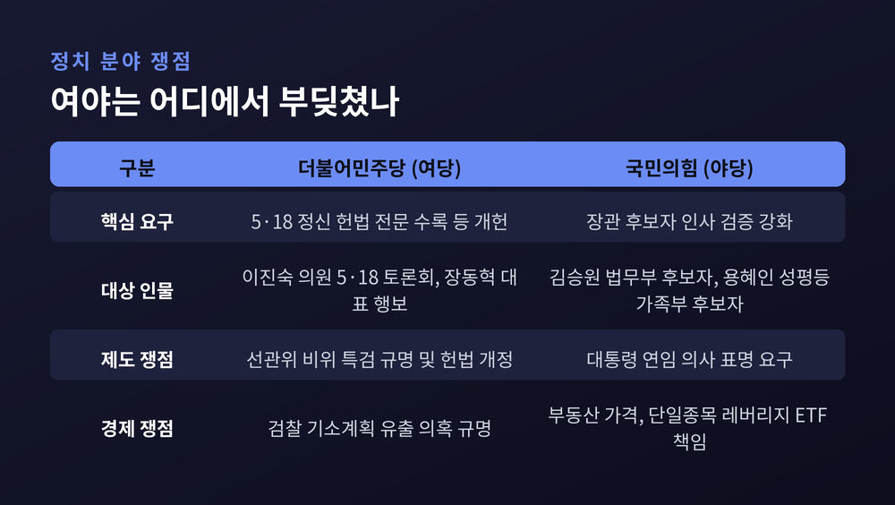

이번 글에서는 2026년 9월 9일 국회에서 있었던 두 가지 일을 정리해 보겠습니다. 오전에는 국회와 경제계가 함께 만드는 상설 협의체가 문을 열었고, 오후에는 나흘 일정의 대정부질문이 시작됐습니다. 성격이 전혀 다른 두 장면이 하루 안에 겹쳤습니다.

9일 오전, 서울 여의도 국회 사랑재에서 '국회 경제대도약위원회' 출범식이 열렸습니다.
국회와 경제계가 대한민국 경제의 미래 전략과 신산업 생태계 조성 방안을 함께 논의하겠다는 취지의 기구입니다. 국회는 이를 '초당적 국가전략 협력 플랫폼'이라고 설명했습니다.
공동위원장은 두 사람이 맡았습니다. 조정식 국회의장, 그리고 최태원 대한상공회의소 회장입니다.
눈여겨볼 지점은 분과 구성입니다. 위원회는 국회 소관 상임위원회 체계에 그대로 맞춰 세 개 분과를 두었습니다. 그리고 각 상임위원장이 분과장으로 직접 참여합니다.
실무는 별도의 추진단이 뒷받침합니다. 윤상은 국회의장비서실 정책수석비서관과 김정일 대한상의 상근부회장이 공동단장을 맡았습니다. 국회사무처, 국회입법조사처, 국회예산정책처의 전문 인력과 대한상의 실무진, 외부 전문가가 분과별로 붙어 법안과 정책을 상시 검토하는 구조입니다.
경제계에서는 삼성, SK, 현대차, LG, 한화, 롯데, 포스코, GS, 이마트, CJ, 대한항공, HD현대, 두산, HS효성 등 열네 곳의 최고경영자가 자문위원으로 이름을 올렸습니다.

핵심은 '상설'이라는 단어에 있습니다.
예전에는 국회와 경제계의 만남이 개별 현안을 다루는 일회성 간담회에 가까웠습니다. 지금은 국회의장과 경제단체 대표가 공동위원장을 맡고, 소관 상임위원장이 분과장으로 상시 참여하는 틀이 만들어졌습니다.
국회도 그 점을 강조했습니다. 그동안 국회와 경제계의 소통은 개별 현안 중심으로 이뤄지는 경우가 많았는데, 이번에는 상시 협력체계를 구축했다는 데 의미가 있다는 설명입니다.
대한상의는 한 걸음 더 나아가 이를 '상설 통로'의 공식화라고 표현했습니다. 기업 현장의 목소리가 국회에 직접 전달되고, 그것이 실제 입법과 제도 개선으로 이어지는 경로를 열었다는 뜻입니다.
이날 대한상의는 '경제대도약을 위한 경제계 제언'을 국회에 전달했습니다. 세 개의 어젠다로 정리돼 있습니다.
| 어젠다 | 주요 과제 |
|---|---|
| 전략산업 경쟁력 강화 및 기업활력 제고 | 첨단산업 규제 혁신, 기업성장 유인 제도 구축, 해외 기술유출 방지 |
| 미래 성장동력 확충 및 경제안보 대응 강화 | AI 등 첨단산업 육성, 공급망 안정성 강화, 기업 세제 지원 |
| 기업 활성화와 금융시장 제도 개선 | 공정거래제도 선진화, 자본시장 활성화를 위한 제도 합리화 |

조정식 의장은 국제정세와 인공지능 혁명의 대전환기를 언급하며, 정부와 기업과 국회가 힘을 합해야 할 때라고 말했습니다. 국회가 민생경제와 미래 세대를 위한 "든든한 뒷받침과 동반자"가 되겠다는 표현도 덧붙였습니다.
최태원 회장의 발언은 결이 조금 달랐습니다. 기업의 경쟁은 속도전인데 기다리는 시간이 길어질수록 기회를 잃는다는 취지였습니다. 국제 정세가 예측하기 어려운 만큼, 적어도 국내 변수만큼은 국회가 줄여달라는 요청이었습니다. 법과 제도를 만드는 역할을 두고 "룰세터"라는 표현을 쓰기도 했습니다.
김정일 대한상의 상근부회장은 제언이 서랍 속 문서로 남지 않게 하겠다고 했습니다. 그만큼 실행에 방점을 찍었다고 볼 수 있습니다.
이 대목은 조심스럽게 볼 필요가 있습니다.
출범 당일 기준으로, 특정 정당이나 단체가 이 위원회에 공식적으로 반대 의사를 밝힌 사례는 확인되지 않습니다. 다만 언론이 이 기구를 부르는 방식은 두 갈래로 갈렸습니다.
한쪽은 '협력'과 '동반자'에 방점을 찍었습니다. 상시 협력체계, 초당적 국가전략 플랫폼 같은 표현이 여기에 해당합니다.
다른 한쪽은 '통로'와 '친기업'을 앞세웠습니다. 국회와 재계의 핫라인, 애로 해결 공식통로, 친기업 입법 맞손 같은 제목이 나왔습니다.
같은 사실을 두고 프레임이 갈린 셈입니다. 그래서 이 기구를 평가하는 시각도 자연히 둘로 나뉠 수 있습니다.
긍정적으로 보는 쪽은 이렇게 봅니다. 산업 현장의 속도와 입법의 속도가 벌어져 있다면, 그 간극을 메우는 상시 창구가 필요하다는 것입니다. 규제와 세제, 자본시장 제도는 결국 법으로 결정되는 영역입니다.
신중하게 보는 쪽의 논리도 성립합니다. 입법부는 행정부를 견제하고 사회 전체의 이해를 조정하는 자리입니다. 그 입법부가 특정 경제단체와 상설 협의체를 두면, 다른 목소리는 어디서 균형을 맞출 것인가 하는 물음이 남습니다. 대기업 중심으로 구성된 자문위원 명단을 두고 중소기업이나 노동 현장의 의견은 어떻게 반영되는지도 지켜볼 대목입니다.
어느 쪽이 옳다고 단정하기에는 아직 이릅니다. 위원회의 운영 기간이나 회의 주기 같은 세부 사항도 아직 공개되지 않았습니다.

같은 날 오후, 국회 본회의장의 공기는 달랐습니다.
국회는 9일부터 나흘간 한성숙 국무총리와 국무위원들을 출석시킨 가운데 대정부질문을 진행합니다. 첫날인 9일은 정치 분야였습니다.
일정은 다음과 같습니다.
| 날짜 | 분야 |
|---|---|
| 9월 9일 | 정치 |
| 9월 10일 | 외교·통일·안보 |
| 9월 11일 | 경제 |
| 9월 14일 | 교육·사회·문화 |
첫 주자는 여당에서 이해식 더불어민주당 의원, 야당에서 나경원 국민의힘 의원이 나섰습니다.

정치 분야 대정부질문의 쟁점은 크게 두 축이었습니다.
이해식 의원은 5·18민주화운동 정신을 헌법 전문에 수록하는 개헌을 주장했습니다. 민주주의의 이름으로 민주주의를 파괴하는 일은 용납할 수 없다는 취지였습니다.
이 의원은 이진숙 국민의힘 의원이 5·18을 왜곡·폄훼하는 토론회를 주최했는데도 당 지도부가 사과나 징계 조치를 하지 않았다고 지적했습니다. 장동혁 국민의힘 대표가 정부 공식 행사에 불참한 점도 문제 삼았습니다.
선거관리위원회를 향한 요구도 나왔습니다. 투표용지 부족 사태를 비롯한 비위를 특검으로 규명하고, 헌법을 개정해서라도 바로잡아야 한다는 주장이었습니다.
나경원 의원은 인사 검증 시스템을 집중적으로 파고들었습니다. 김승원 법무부 장관 후보자와 용혜인 성평등가족부 장관 후보자를 둘러싼 의혹이 대상이었습니다.
이재명 대통령을 향해서는 연임 의사가 없다는 점을 직접 밝히라고 요구했습니다. 부동산 가격 상승과 주식시장 문제도 지적했습니다.
단일종목 레버리지 ETF 문제도 도마에 올랐습니다. 나 의원은 김용범 전 청와대 정책실장의 사퇴로 끝날 사안이 아니라며 책임자 규명을 요구했습니다.

한성숙 국무총리의 답변은 사안마다 온도가 달랐습니다.
5·18 왜곡 토론회에 대해서는 소식을 듣고 믿을 수 없었다며 참담했다고 말했습니다. 5·18 정신을 헌법에 수록해야 한다는 데도 공감을 표했습니다.
대통령 연임 문제에 대해서는 이미 여러 차례 연임하지 않겠다는 뜻을 밝혔다고 답했습니다.
인사 검증 지적에는 유능한 인물이라고 판단해 제청했다며, 청문회를 통해 소명할 시간을 주는 것이 필요하다고 했습니다.
레버리지 ETF 문제에는 손실을 입은 국민에게 송구하다는 표현을 썼습니다.
이 밖에 검찰개혁과 보완수사권, 대법관 제청 갈등, 호르무즈 파병, 8·30 개각 등이 나흘 내내 쟁점으로 예고돼 있습니다.
두 장면은 각각 다른 시계를 갖고 있습니다.
대정부질문은 9월 14일 교육·사회·문화 분야를 끝으로 마무리됩니다. 11일 경제 분야에서는 부동산과 자본시장 정책이 다시 정면으로 다뤄질 가능성이 큽니다. 인사청문회 국면과 맞물려 있어 공방의 온도는 더 올라갈 수 있습니다.
경제대도약위원회는 시계가 훨씬 깁니다. 대한상의가 전달한 세 개 어젠다가 실제 법안으로 이어지는지, 이어진다면 어느 분과에서 얼마나 빠르게 움직이는지가 첫 시험대가 될 것입니다.
한 가지 더 남습니다. 이 위원회가 스스로 내건 '초당적'이라는 말을 지킬 수 있느냐입니다. 국회의장이 공동위원장인 기구인 만큼, 여야 어느 쪽에서도 편향 시비가 나오지 않게 운영하는 일이 관건입니다.
정리하면 이렇습니다.
9월 9일의 국회는 오전과 오후가 달랐습니다. 오전에는 손을 맞잡았고, 오후에는 서로를 겨눴습니다. 어느 한쪽만 국회의 본모습이라고 말하기는 어렵습니다.
"협력과 대립은 국회의 두 기능이지, 두 얼굴이 아니다."
다만 그 둘의 균형이 잘 잡혀 있느냐고 물으신다면, 지금은 답을 미뤄두고 지켜보겠다고 말씀드리겠습니다. 위원회가 첫 법안을 내놓는 순간, 그리고 대정부질문이 끝난 뒤 남는 것이 무엇인지에 따라 평가는 달라질 것입니다.